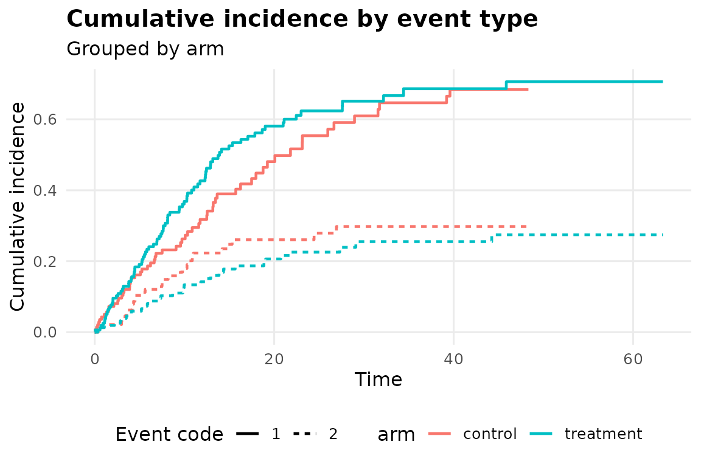

Getting Started: Competing Risks Pipeline
Source:vignettes/competing-risks-pipeline.Rmd
competing-risks-pipeline.RmdWhy not just treat competing events as censoring?
Suppose the event of interest is relapse, but some patients die from
an unrelated cause first. Treating that death as ordinary censoring in a
standard KM or Cox analysis implicitly assumes those patients would have
gone on to relapse eventually, had they lived – an assumption you can
never check and usually don’t believe.
fit_competing_risks_pipeline() instead estimates the
cumulative incidence directly, keeping those subjects in the risk set on
the correct (subdistribution) timescale.
The event coding is different here.
fit_km_pipeline() and fit_coxph_pipeline()
want a binary 0/1 event indicator. This function wants
event_var to encode which event happened:
0 = censored, 1 = the event of interest,
2 = a competing event, and so on.
A simulated example
set.seed(1)
n <- 300
dat <- data.frame(
time = rexp(n, rate = 0.1),
event = sample(c(0, 1, 2), n, replace = TRUE, prob = c(0.3, 0.5, 0.2)),
arm = factor(sample(c("control", "treatment"), n, replace = TRUE))
)
fit <- fit_competing_risks_pipeline(
dat, "time", "event",
group_var = "arm",
covariates = "arm"
)
fit
#> <omicsuite competing risks pipeline>
#>
#> Event summary:
#> code label n proportion
#> 1 0 censored 92 0.3066667
#> 2 1 event of interest 146 0.4866667
#> 3 2 competing event 62 0.2066667
#>
#> Fine-Gray subdistribution hazard model:
#> convergence: TRUE
#> coefficients:
#> armtreatment
#> 0.2271
#> standard errors:
#> [1] 0.1631
#> two-sided p-values:
#> armtreatment
#> 0.16
#>
#> Diagnostic verdicts:
#> [INFO] event_type_breakdown code 0 (censored): n = 92 (30.7%); code 1 (event of interest): n = 146 (48.7%); code 2 (competing event): n = 62 (20.7%)
#> [INFO] subdistribution_vs_cause_specific This pipeline models the subdistribution hazard (Fine-Gray), which is the right quantity for predicting cumulative incidence in the presence of competing risks. It answers a different question than a cause-specific hazard model (an ordinary Cox model with competing events treated as censored) -- the two can even point in different directions for the same covariate. Report which one you used and why. [see plots$cif_plot]
#> [INTP] interpretation[gray_test_event_1] Gray's test for event code 1 across `arm`: statistic = 1.70, p = 0.1925. No significant evidence that cumulative incidence differs across groups for this event type at this alpha. [see plots$cif_plot]
#> [INTP] interpretation[gray_test_event_2] Gray's test for event code 2 across `arm`: statistic = 0.79, p = 0.3746. No significant evidence that cumulative incidence differs across groups for this event type at this alpha. [see plots$cif_plot]
#> [INTP] interpretation[subdistribution_hr_armtreatment] Subdistribution HR for `armtreatment` = 1.255, p = 0.1600. Associated with a 25.5% higher subdistribution hazard of the event of interest (not statistically significant at this alpha). This is not the same quantity as a cause-specific hazard ratio from a standard Cox model -- see this function's documentation for why. [see plots$cif_plot]Reading the verdict table
fit$verdicts
#> check verdict statistic
#> 1 event_type_breakdown info 0.4866667
#> 2 subdistribution_vs_cause_specific info NA
#> 3 interpretation[gray_test_event_1] interpretation 1.6980883
#> 4 interpretation[gray_test_event_2] interpretation 0.7882838
#> 5 interpretation[subdistribution_hr_armtreatment] interpretation 1.2549520
#> p_value
#> 1 NA
#> 2 NA
#> 3 0.1925382
#> 4 0.3746196
#> 5 0.1600000
#> note
#> 1 code 0 (censored): n = 92 (30.7%); code 1 (event of interest): n = 146 (48.7%); code 2 (competing event): n = 62 (20.7%)
#> 2 This pipeline models the subdistribution hazard (Fine-Gray), which is the right quantity for predicting cumulative incidence in the presence of competing risks. It answers a different question than a cause-specific hazard model (an ordinary Cox model with competing events treated as censored) -- the two can even point in different directions for the same covariate. Report which one you used and why.
#> 3 Gray's test for event code 1 across `arm`: statistic = 1.70, p = 0.1925. No significant evidence that cumulative incidence differs across groups for this event type at this alpha.
#> 4 Gray's test for event code 2 across `arm`: statistic = 0.79, p = 0.3746. No significant evidence that cumulative incidence differs across groups for this event type at this alpha.
#> 5 Subdistribution HR for `armtreatment` = 1.255, p = 0.1600. Associated with a 25.5% higher subdistribution hazard of the event of interest (not statistically significant at this alpha). This is not the same quantity as a cause-specific hazard ratio from a standard Cox model -- see this function's documentation for why.
#> plot
#> 1 <NA>
#> 2 cif_plot
#> 3 cif_plot
#> 4 cif_plot
#> 5 cif_plotevent_type_breakdown is worth checking first – how many
subjects landed in each event code, including censoring.
subdistribution_vs_cause_specific is a standing reminder,
not a data-dependent result: the Fine-Gray model here answers a
different question than a cause-specific Cox model would, and the two
can point in different directions for the same covariate.
interpretation[gray_test_event_<code>] is the
group-comparison test per event type;
interpretation[subdistribution_hr_<term>] is the
Fine-Gray model’s subdistribution hazard ratio, phrased the same way as
fit_coxph_pipeline()’s hazard ratios but explicitly labeled
as a subdistribution HR so the two don’t get conflated in a
write-up.
The cumulative incidence plot
plot(fit, which = "cif_plot")
Each event type gets its own line style, each group its own color –
so you can see at a glance whether the event of interest and the
competing event are moving in the directions you’d expect for each arm.
The fit$verdicts rows above with
plot == "cif_plot" are the ones that explain this figure –
Gray’s test and the subdistribution hazard ratios – worth pulling into
the same write-up as the figure itself.